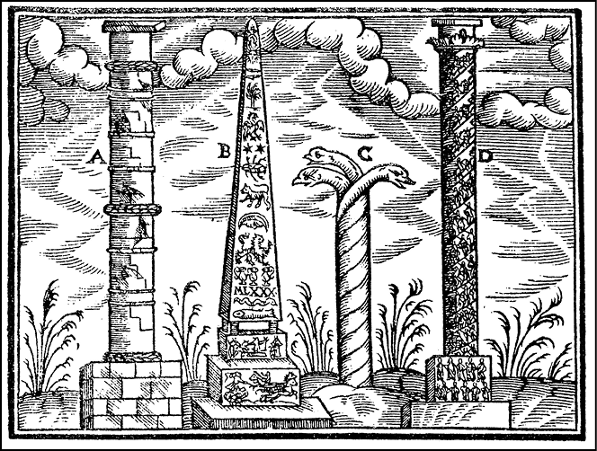
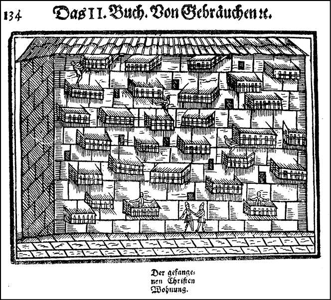
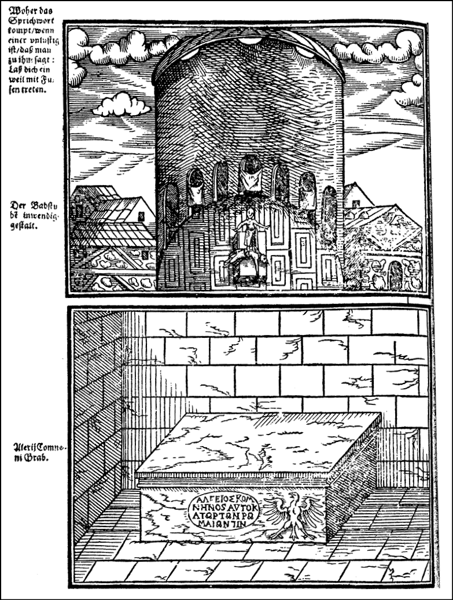

16. Yüzyıl Alman Seyahatnamelerinde Türkiye*
Hans Dernschwam’ın Günlüğü
Ele alacağımız ilk seyahatname Hans Dernschwam’ın günlüğüdür. Dernschwam 1553’te Avusturya’nın ünlü elçisi Ogier von Busbecq’in maiyetinde İstanbul’a hareket etti. Bu sırada İran seferinde olan Kanunî Süleyman’la anlaşma yapmak isteyen elçi Ogier von Busbecq maiyetiyle İstanbul-Kastamonu üzerinden yola çıktı. O dönemde Avusturyalılar Macaristan sorununu çözmek ve Erdel prensinin Osmanlı himayesinde sık sık Slovakya ve Avusturya Burgenland’ına yaptığı akınları önlemek için, ancak elçiler yollayıp yüksek haraç ödeyerek mütareke yapabiliyordu. Bu 8-12 yıllık kısa anlaşmalarla savaş bir süre kesiliyordu. Bu anlaşmalar tamamıyla Osmanlı devletinin inisiyatifine kalmıştır.1 1559’da geçici barışı sağlayan bir ahidname elde eden ve ismi ahidnamede zikredilen elçi von Busbecq, 1555’te yaptığı yolculuktan başarısız olarak dönmüştür. Bu yolculuğun tek dikkat çekici yönü, elçilik grubunda Dernschwam’ın da bulunması ve gezi notlarını bize günlük olarak bırakmasıdır. Heyet Anadolu’ya alışılmış olan Gebze-İzmit-İznik yoluyla değil, Kastamonu Pursak-Ankara-Çorum-Elvan Çelebi ve Amasya tarikiyle geçti.
Dernschwam bu vesileyle Anadolu’nun bize bir manzarasını; köylerin ve küçük şehirlerin yapısının ilginç tasvirlerini verebilmektedir. Dernschwam bu günlüğünü yurduna döndükten sonra, Hans Dernschwam’s Tagebuch, Einer Reise, und Konstantinopel und Kleinasen 1553-1555 başlığı adı altında yayımladı. Gerçekten aydın ve bilgili bir kişi olan Dernschwam, kendine özgü birtakım tabirler yanında devrinde moda olan Latince, Yunanca söz ve deyimleri bolca kullanarak üslûbunu biçimlendirmiştir.
Seyyahın doğum ve gençlik yılları iyi bilinmiyor.2 1494’te doğmuş olacak. Bir Bohemya Almanı olduğu açıktır. 1507’de Viyana Üniversitesi’nde bulunmuş.3 Asıl önemlisi 1512-1515 yıllarında Macaristan’da prenslik sarayında ünlü hümanist Hieronymus Balbi’nin hizmetine girmiştir. 1530’larda Macaristan ve Transilvanya’da arkeolojik merkezleri gezip kitabeleri kopya etmiş ve yayımlamıştır. Gerçekten seyyahın klasik filoloji bilgisi sağlamdır ve Anadolu gezisinde de arkeolojik yönden değerli olacak kitabe kopyaları almıştır. Ancak ileride de göreceğimiz gibi, seyyah antik çağ Anadolu siteleri hakkında önemli yanlışlar yapıyor ki, Ankara şehri hakkında yazdıklarında bunu görmek mümkündür. Babinger’in Dernschwam’ın Macaristan’daki faaliyeti hakkında bize söyledikleri önemlidir. Macaristan bu dönemde tarihinin en şaşaalı dönemini yaşıyordu ve Orta Avrupa’da İtalyan Rönesans kültürünün en etkili temsilcisiydi.
Macar Kralı Matyos Corvinus’un Viyana’yı fethedip (1485) orayı merkez yapmasından ve tekrar kaybetmesinden sonra, Budin ve Viyana ilişkileri bütün Tuna boyunu kapsayan bir canlılığa ulaşmıştı. Hattâ aralarında ilmî ve edebî ilişkilerin bile sıklaştığına, ortak çalışmalar yapıldığına bir delil olarak “Literaria Danubia” adlı cemiyeti söyleyebiliriz. Dernschwam’ın da bu çevrede yetişmesi ve yaklaşan Türk etkilerine karşı aynı ortak kaygı ve ilgiyi duyması bir rastlantı değildir. Hümanist kültürünün yanı başında madencilik ve ticaret dalında da seçkin bir uzman olmalıdır. Babinger’in verdiği bilgiye göre, 1525’te ünlü banker, işadamı Anton Fugger’in yanına girdi. Transilvanya madenlerinde çalıştı. 1553’te bu becerikli adam Busbecq’in maiyetinde, söylediğimiz gibi İstanbul’a hareket etti.4 Bütün yetişme tarzı, bilgisi ve becerileriyle tam bir yeniçağ Avrupalısı olan Dernschwam’ın, Türkiye gezisinde de başka seyyahlardan daha farklı gerçekleri tesbit ve not edeceği muhakkaktır. O yüzden eseri ilginç bir kaynak olmuştur.
16. Yüzyılda Ankara
Dernschwam elçilik heyetiyle birlikte geçtiği Ankara şehri hakkında önemli şeyler bildirmekte, gerek şehrin mekân organizasyonu, gerek binaları hakkında yazmaktadır. Bundan başka bölgenin ünlü bir faaliyet dalı olan sof dokumacılığının tekniği ve bu üretimin şehir ve köylerdeki yaygınlığı hakkında fikir edinmemize yarayan gözlemleri vardır. Dernschwam, Ankara’nın binalarını şöyle anlatır: “Sokaklar dar olup, evler kerpiçtir ve damsızdır. Sadece toprakla örtülmüştür. Şehrin dışında mezarlar ve mermer mezar kitabeleri var. Bu civardaki yapı temellerinden görülüyor ki, şehir bir zamanlar daha büyüktü.”5 Şehirdeki Iulianus sütunundan, Augustus mabedinden bahsediyor. Bugün Çankırı Caddesi kenarında bulunan Roma hamamlarını bir saray sanıyor ve Palatio diye söz ediyor.
Dernschwam, Ankara’ya yarım mil uzaklıktaki Meryem Ana Kilisesi ve manastırından da söz ediyor. “Bu eski bir Rum kilisesidir. Dört beş yarı cahil Ermeni keşişi oturur. Hepsi toptan kötü bir kulübede yaşarlar. Bir de piskoposları var, cahil bir köy papazından beter,”6 diyor. Dernschwam, Gregoryen Ermeni manastırını Rum Ortodoks kilisesiyle özdeşleştirmiş olsa gerek. Ancak bizce önemli olan, Doğu Kilisesi mensublarını küçümseyişidir. 16. yüzyıl Avrupa’sında Protestan veya Katolik, Cizvit veya Kalvinist olsun, ruhban sınıfı da cemiyetin yeni entelektüel hayatına ayak uydurmuştu. Doğu din adamlarının bilgi seviyesinin bu şekilde eleştirilmesinde gerçek payı vardır. (Nitekim 10. asırda Bizans’a gelen Piskopos Liutprand de Cremona bütün Katolik taassubuna rağmen, ruhban hakkında 16. yüzyılın seyyahlarına benzeyen eleştirilerde bulunmamıştır.) Eserinin bir başka yerinde: “Türkler tarih bilmezler, ibadetleri Arabcadır. Rahiblerini anlamazlar, tıpkı bizimkilerin papazların Latincesini anlamadığı gibi,”7 der. Bu, yazarın reformist kiliseye mensubiyetinden ileri gelir.
Sof İmalâtı
Dernschwam’ın sof imalâtı ve tekniği hakkındaki gözlemleri kitabında önemli yer tutmaktadır. Ahalinin sofçuluk ve keçe imaliyle geçindiğini söyler. Ankara’da sırf sof yıkamakla geçinenler ayrı bir lonca teşkil etmektedirler. (Bunlara sof perdahçısı, sof yunucusu denirdi.) Seyyah bir sof imalâthanesini anlatıyor: “Burada iki kazan, iki de pres vardır. Bundan başka bir küçük pres daha bulunmaktadır. Islanmış sofu yedi kişi bir cenderede ezmektedir. Bu tıpkı Viyana’daki şarabcıların aletine benziyor. Aletler çok ibtidaîdir. Bunlardan daha kötüsü olamaz,”8 demektedir. Manifaktüre geçen ve gelişen Avrupa teknolojisini yakından tanıyan yazarın bu küçümsemesi ilginçtir. Dernschwam’ın her alanda mevcut teknolojiyi küçümsediğini görüyoruz.
Sofçuluk ve bunun için gerekli faaliyetlerin bölgede nasıl yaygın olduğunu notlarında sık sık görmekteyiz.
Nitekim uğradığı bir köy olan Kutilin’de (muhtemelen Kurtini) kadınlar ücret karşılığı şehirdeki sof imalâtçıları için tiftik yünü eğirmektedirler. Onun misafir kaldığı evin sahibesi de bu yünlerden eğirip mavi renge boyamaktadır.9 Nitekim Ankara civarında geçtiği birtakım köylerde de ahalinin hayvancılıkla uğraştığını ve şehre satmak için tiftik ipliği eğirdiklerini; bundan sof (Zamlot diyor) yapıldığını söyler.1 Seyyah, kadınların yün eğirmek için kullandıkları aleti (3 parmak uzunluğunda, 1 parmak kalınlığında) gayet kötü bir alet diye tarif eder. Şüphesiz ki geniş miktarda yün eğiren tezgâhlar o devirde Avrupa’da bile ancak Bohemya’ya kadar yayılmıştı. Avusturya bile manifaktüre 17. asır sonunda geçecektir. Önemli olan nokta, Batı manifaktürünün izlediği yolun, yani köylerdeki ucuz emekten yararlanmanın başlangıç hâliyle Anadolu’daki üretim merkezlerinin civarında da görülmesidir.11 Dernschwam gezisi esnasında bir yandan satmak için yün eğiren köylü kadınlarından söz ederken, bir yandan da daha uzak köylerden ahalinin az parası olduğunu ve parayı tanımadıklarını söylüyor.12

Schweigger’in seyahatnamesinden: İstanbul’un ünlü tarihî sütunları.
Anadolu’da Köy Hayatı
Dernschwam köy hayatını şöyle anlatmaktadır: “Köylülerin evleri ahır gibidir. Bodrum, sofa, oda, camlı pencere yoktur. Kilit, anahtar, tabak, kandil, bardak, yatak örtüsü, masa, sıra yok. Onun için yerde oturur ve uyurlar.”13 “Size oturmak için eski bir halı ikram eden kendisini efendi sanır. Masa örtüsü ve peçete yoktur.”14 Genellikle pencere camı ve birkaç odalı ev, Kuzeybatı Avrupa şehirlerinde bile geç ortaçağda yaygınlaştı. 15. yüzyıl Tuna bölgesi köylü evlerinin de Dernschwam’ın anlattığı bu evlerden pek farkı yoktu. Tarımda modernleşen teknolojinin, ulaşımda ise at ve arabanın kullanıldığı, düzgün yollara sahib, üretimde de lonca sistemini terk etmiş ve geniş pazar için ucuz üretime geçen ülkelerin, yani 16. yüzyıldaki Kuzeybatı Avrupa’nın hayat tarzı ve tüketim normlarına göre 16. yüzyıl Anadolu’su çok farklı bir yerde olmalıydı.
Köylünün Yetersiz Beslenmesi
Dernschwam Anadolu’da kırsal nüfusun beslenme konusu üzerinde de duruyor. “Kır ahalisi nadiren et yer, bunun için bir koyun veya keçinin hastalanması ve kesilmesi lâzımdır. Umumiyetle zorba (çorba) dedikleri bizim suppeye benzeyen bir yemekleri vardır, ekşi ve tuzludur. Bunun için herkes kuşağında bir kaşık taşır.”15 (Seyyah burada tarhanayı kastetmektedir.) Bundan başka ekmeğin her yerde çok ucuz, fakat kötü kalitede olduğunu söylemektedir.16 Genellikle bu hüküm diğer bazı seyyahlarda da görülür. Meselâ, 18. yüzyılda da durumun aynı olduğunu D’Ohsonn’dan öğreniyoruz. Ekmeğin yerine patatesin ikame edilmediği bir yerde bu durum normaldir. Batı Avrupa ülkelerinde patates ekimi ve tüketimi yeni çağların önemli yeniliklerinden biridir.
Bizce Dernschwam’ın en ilginç gözlemleri tarımsal teknoloji alanındadır. Gerçi seyyah bize çok bilinmedik şeyler söylemiyor, ancak onun gördükleri karşısındaki tutumu ilginçtir. Seyyah geçtiği köylerde gördüğü aletlerden düveni anlatıyor. “Bunlar hasadı sapından bizde olduğu gibi ayıramazlar. İki tahtayı bir araya getirerek altına keskin çakmaktaşları çakmışlardır. Bunu iki öküze bağlayarak üstünde etrafı dönerler ve ürünü ezerek keserler.” Dernschwam düveni tanımamakta ve hayretle anlatmaktadır. Bir resmini de çizmiştir. Seyyah karasabana da küçümser bir edayla bakıyor. “Sabanları (Pflug) çok kötü. İki öküzle çekiliyor,”17 demektedir. Bunun da bir resmini çizmiştir. Bütün bunlar tarımda teknolojik devrimini yapan bir sistemin adamı için gerçekten de şaşılacak ve küçümsenecek aletlerdir. Gördüğü kadarıyla hayvancılığı da küçümsemektedir. “Türkler hayvanları kuru otla besler, bu bizde işe yaramaz şeydir. Başka yemi katır ve develere veriyorlar,”18 diyor. Tabiatıyla bu dönemde Avrupa’nın kuzey kesiminde büyükbaş hayvancılık artık daha gelişmiş usullerle yapılmaktaydı. Tarım teknolojisi ve hayvancılık Tuna boyu ülkelerinde henüz geri bir aşamadaydı. Örneğin, Avusturya’da ve Hırvatistan’da 18. asır ortalarına kadar ahırlar son derecede ibtidaî ve meralar verimsizdi.19 Keza demircilik ve tarımsal teknoloji inkılâbı da ancak 17. yüzyıl sonlarından itibaren başlamıştı.20
Salomon Schweigger’in İstanbul İzlenimleri
Dernschwam’ın seyahatnamesindeki bu ilginç noktaları özetledikten sonra ikinci seyyahımız Salomon Schweigger’in Türkiye seyahatnamesine bakabiliriz. Schweigger İstanbul dışında, Suriye, Kudüs ve Mısır’a da geçmiştir. Ama eserinin önemli bir bölümü İstanbul’da gördükleri hakkındadır ve ilginç mülâhazaları vardır.21
Bu eserin orijinal baskısı, 1961’de Avusturya Devlet Arşivi uzmanlarından Rudolf Neck tarafından bir önsözle, tıpkıbasım hâlinde yayımlanmıştır.22 Salomon Schweigger 1551’de Haigerloch’ta doğdu. Schwebenli bir Protestan papazıdır. 1576’da Graz’a geldi ve Protestan asilzade Joachim von Sinzendorff’un hizmetine girdi. İmparator Rudolf II, Sinzendorff’u 1571’de İstanbul’a sefir tayin edince, Schweigger onun maiyetinde Türkiye’ye hareket etti. Gran (Esztergon)-Belgrad-Niş-Filibe ve Edirne yoluyla İstanbul’a geldiler. Yol boyu gördüklerini kaydetti. İstanbul’dan uzun boylu söz eder. Eserin ikinci kısmı İstanbul anılarına ayrılmıştır. Resimlerle süslediği bu seyahatnamesi, 1608 yılında Nürnberg’de Eine newe Reyssbesscreibung auss Theutschland nach Contantinopel und Jerusalem başlığı altında neşredildi. Schweigger’in de kendine has bir ortographie’si vardır ve “Neuhoch Deutsch” denilen yeni zaman yüksek Almancasında yazar. Ancak Dernschwam derecesinde bilgin bir kişi olmayan Schweigger’in gerek Latince ve Yunanca deyimlerde, gerekse coğrafya ve tarih bilgisinde önemli hataları vardır. Bazı menkıbelerin ve rivayetlerin etkisi altında kaldığını da ekleyelim. Schweigger’in bu özellikleri, onun Dernschwam ve Gerlach ayarında bir eser meydana getirmesini önlemiştir. Biz, bu yazının ekinde, Schweigger’in İstanbul hakkında yazdıklarının bir kısmını çevirerek veriyoruz.
“Çok Karılı Evliliğe Pek Az Rastladım”
Schweigger’in İstanbul’da bulunduğu sıralar, hareketli bir dönemdi. İstanbul’da İspanya, Venedik ve Fransız sefaret heyetlerinin yanı sıra, 1578’den itibaren yepyeni stratejiyle işe girişen İngiliz sefaret heyetleri de faaliyete geçmişti. Avusturya ise normal daimi delegasyonundan başka, yıllık vergileri vermek, kısa süreli mütarekeler yapmak için fevkalâde elçilik heyetleri de gönderiyordu. Schweigger bu karışık atmosferden çok, gördüklerini nakletmekle yetinmiştir. Schweigger’de gördüğü şeylere karşı eleştirel bir bakış olup, zaman zaman kendi çevresi ile karşılaştırmalar yapmaktadır. Bu bakımdan onun İstanbul’da gördüklerini ve yargılarını ele almakta fayda vardır. Bu arada ilginç bir gözlemi de epey uzun boylu durduğu aile hayatı üstüne: “Bunlarda aile hayatı bizden pek farklı değildir. Çok karılı evliliğe pek az rastladım.”
İstanbul’da Konutlar
Schweigger bu çevirdiğimiz bölümde şehrin özel ve kamusal binaları üzerinde çok durmaktadır. Seyahatnamenin ilginç bir bölümünü teşkil eden bu tasvir ve görüşler bize 16. yüzyılın Batı Avrupa’sı ile bir karşılaştırma yapma olanağını veriyor. Seyyahımız şehrin evlerinin yapımında kullanılan malzemeden yapı tekniğine ve evlerdeki yaşam tarzına kadar her şeyi eleştiriyor. Konforlu ve geniş kâgir yapılar 16. yüzyıl Avrupa’sında canlı bir ticaret ve manifaktür sayesinde gelişen burjuva sınıfının hayat tarzının ifadesi olmuştu. Sermaye hareketlerinin hızlanması, toplumda yeni sınıfların statü sahibi olma çabası, gösterişçi harcamaları artırmış, tümüyle tüketim normlarını değiştirmişti. Bu, inşaatta da yeni teknikleri ve yeni malzemeyi yaratmıştır. Nitekim Schweigger’in “bizde 200-300 guldene olacak bir ev burada birkaç katına mal oluyor,” demesi bundandır. Şehirlerarası ulaşım araçlarında bir değişme olmamıştı ve aynı durum şehir içi ulaşımda da söz konusuydu. İnşaatlar bu nedenle pahalıya çıkıyordu ve daha ucuz malzeme kullanmak gerekiyordu. Schweigger’in bu eleştirileri daha başka seyyahlar tarafından da yinelenmiştir. Özellikle 19. yüzyılda İstanbul’a gelen Moltke, Türklerin özel konutlarını çok tenkid eder.23 Gerçekte özel konutlar Batı Avrupa’da 14. yüzyılda, Tuna boyu ülkelerinde de 16. yüzyıl ortalarına kadar farklı değildi. Ancak bu devirlerde tarımsal zenginleşme, ticaret ve sermaye birikiminin hızlanmasıyla değişen tüketim normları önce bu alanlarda görülmüştür.

Schweigger’in seyahatnamesinden: Hıristiyan tutsakların evleri. Galata’nın dışında, Tarabya’nın karşısında [?]
Tophane adı verilen bölgede, düzensiz ve art arda yığılmış yüz kadar evde, savaş tutsağı Hıristiyanlar oturmaktaydılar.
Bu devirde Türk şehirlerinde bu tür sade konut binalarının yaygın olması, yangın ve zelzeleden korunmak ve zenginliği göstermemek içindir.
Büyük servetlerin görülmediği bir yerde ahalinin yangınlarda kül olacak bir evi mütevazı şekilde inşa ettirmesi normaldir. Bundan başka statü sağlamak için gösterişçi tüketim yapmanın akıllıca bir iş olmadığı; servet sahibi olduğunu göstermenin hiçbir yararı bulunmadığı, tersine külfetler yüklediği açıktır. Bu dinî kanaatkârlıkla ilgili değildir. Gerçekte her dinin tüketimi kısıtlayan görüşleri vardır. Bu sermaye hareketinin yoğunluğu, servetlerin dağılımı ve güvencesiyle ilgili bir sorundur.
Nitekim İstanbul, Bizans devrinde de tüm olarak ahşap binalardan oluşuyordu. Bu nedenle bugüne kadar bir-iki saray kalıntısı ve mabedden başka bina kalmamıştır. Ayrıca Nika İsyanı gibi ayaklanmalarda çıkan yangınların çabucak yayılması bunu gösteriyor.24
Kamu Binaları
Schweigger, özel konutların bu durumuna karşılık, İstanbul’un kamusal binalarının güzellik ve görkemine değinmektedir. Ona göre bu binalardaki şaşaa ancak riyakârlara ve sahte dindarlık taslayanlara özgüdür; gerçek müminler bu işte gevşek ve ihmalkârdır ve paralarını faydalı işlere yatırırlar. Schweigger böylece kamusal gelirlerin bir merkezde toplanıp kamu binalarına bolca harcandığı toplumsal mekanizmaya bir yeniçağ Avrupalısının anlayışıyla bakar. Bu gibi gösterişçi binalara para yatırmayı ihmal eden hakikî müminler(!) yeni zamanların tüccar toplumlarıdır. Şehir idareleri parayı güzel bir kilise için harcayacağına, yeni bir liman yapmaya veya karayolunun onarımına yahut diğer yatırımlara ayırmayı tercih etmektedir. Yeni çağların parayı para çekmek için harcayan müminleri, kendi kişisel konforunu sağlamak konusunda cömerttirler, bu anlayışı Schweigger’de görüyoruz.
Hem Ev Hem İşyeri
Seyyahın ilgisini çeken bir diğer konu, çocuk okullarının bu işe ayrılan bir binada değil de, mekteb hocasının evinde olmasıdır. Esasen bu durum Türk şehirlerinde sırf okul için değil, vakıf kurumların dışında resmî daireler için de söz konusudur. Mahkeme, kadı’nın evindeydi. Hattâ çeşitli yüksek memurlar belli bir binada değil, kendi evinde çalışırdı. Henüz birtakım ilişkilerin yeterince anonimleşmediği ve yüz yüze ilişkiler olarak devam ettiği, kamu kurumlarının merkantilist bir toplumdaki düzeye ulaşmadığı bir ülkedeki gelenek ve kurumlar, merkantilist Avrupalı için kuşkusuz ilginç görünümde olacaktı.
Bedesten’den hayranlıkla bahseden Schweigger, burada da farkında olmadan ilginç bir karşılaştırma yapıyor. Burada satılan ve işlenen şeylere hayran kalıyor ve elişçiliğinin çok ince olduğundan, kumaşların Avrupa’daki gibi düz renklerde olmayıp çeşitli renk ve desenlerden oluştuğundan, deri ve diğer eşyanın da böyle olduğundan söz ediyor. Manifaktür tipi üretim, Avrupa ürünlerinde bu tür ince işçiliği yok etmişti. Daha ucuz, düşük kaliteli ve her türlü elişçiliğini asgarîye indiren bir üretimle, lonca üretiminin farkı burada ortaya çıkar. Bir Batı Avrupa kentinde çarşı, bu devirde pahalı olmayan fakat bol malın bulunduğu yerdir. Onun için Bedesten’in seyyaha bir prenslik kadar zengin görünmesi mübalâğa değildir. Bedesten gerçekten lüks mallara yönelik ticaretin görülebileceği yerdi. Nitekim orta çağlarda kumaş boyama zanaatının çok gelişmesi, el dokuması kumaşların eskimemesinden ileri gelen bir gereksinimi karşılamak içindi.
Hanlardan ve yol üstü konaklama tesislerinden de söz eden Schweigger, bize yeni bir bilgi vermiyor, bu konular sadece onun kendisi için ilginçtir. Uzun mesafe ticaretinin at ve araba teknolojisine ve dolayısıyla lüks emtiadan daha zarurî ve çeşitli ucuz mamulâta çevrildiği, yolların düzeldiği ve yol üstü konaklama tesislerinin gelişip her türlü hizmet arzının arttığı merkantilist Avrupa’da böyle bedava vakıf-hanlar ve kervansaraylar görülmezdi.

Schweigger’in seyahatnamesinden: Üstte, bir hamamın iç görünüşü; altta,
Aleksios Komnenos’un mezarı.